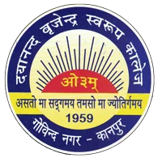

Established in the year 1959 in Govind Nagar, Kanpur, Dayanand Brajendra Swarup College is an ever- blossoming flower of the patriotism, spirit of social service, intellectual sensitivity and entrepreneurship of Late Dr. Virendra Swarup, a visionary, the ex-Chairperson of U.P. Legislative Assembly, and the Honourable founder of this esteemed institution. It is also a heartfelt tribute of a dutiful son to his magnanimous and inspiring father, Late Dr. Brajendra Swarup.